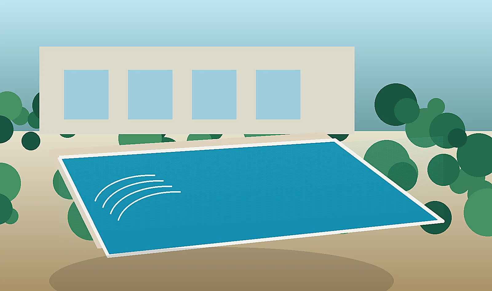
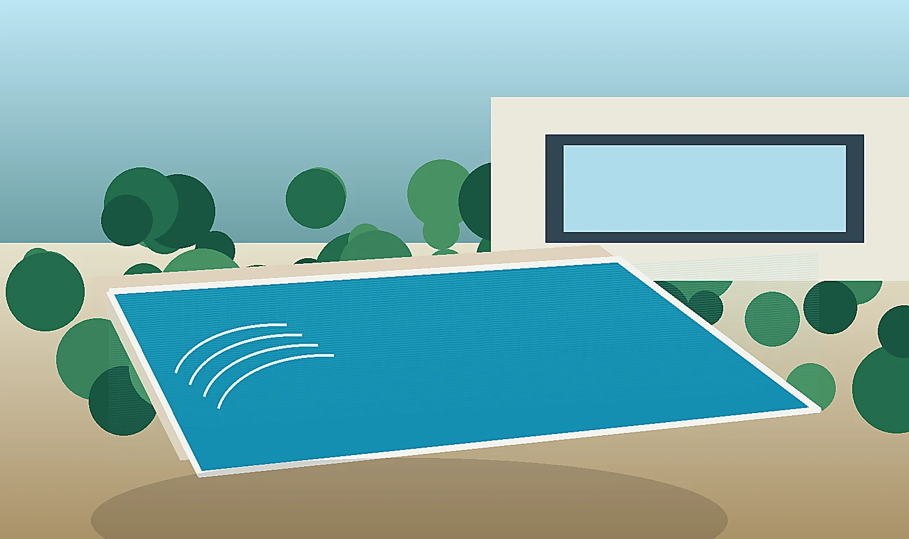
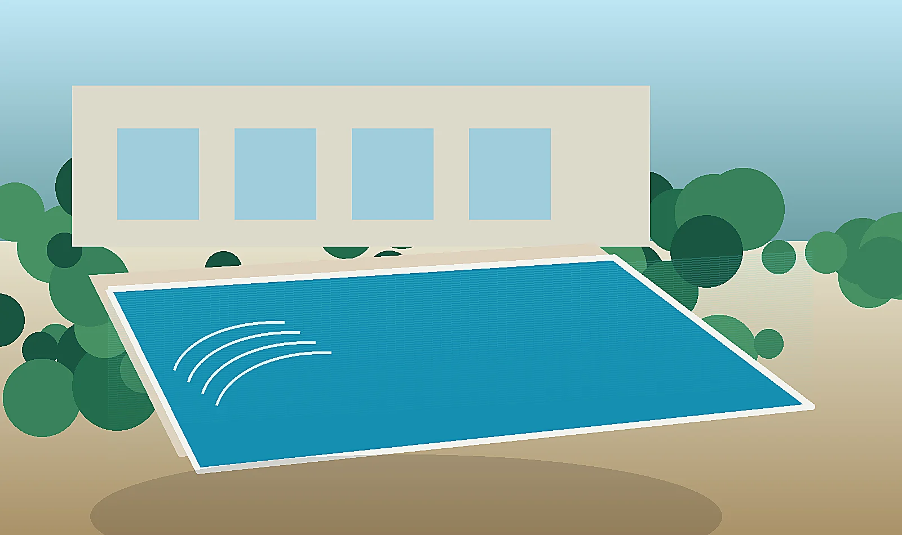
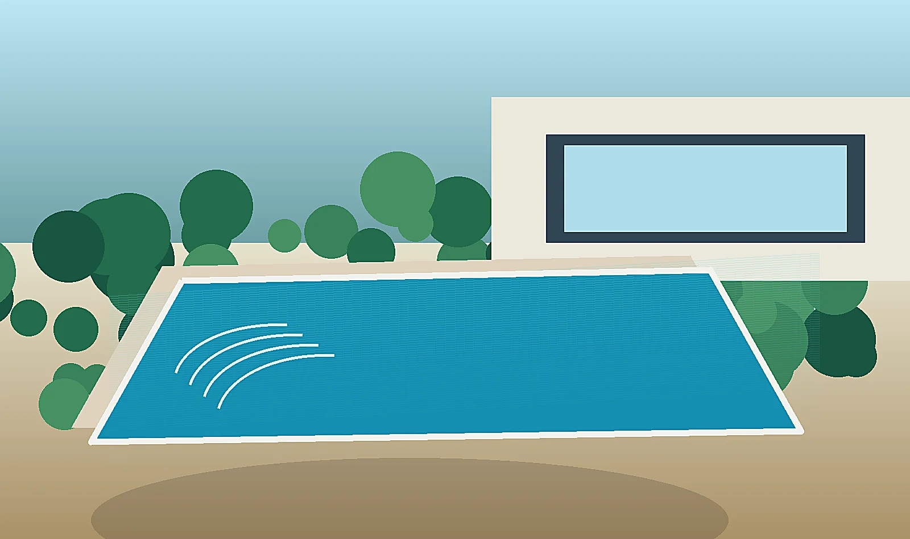
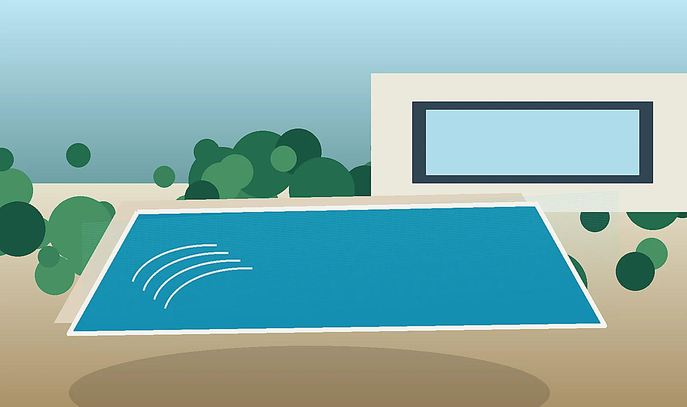
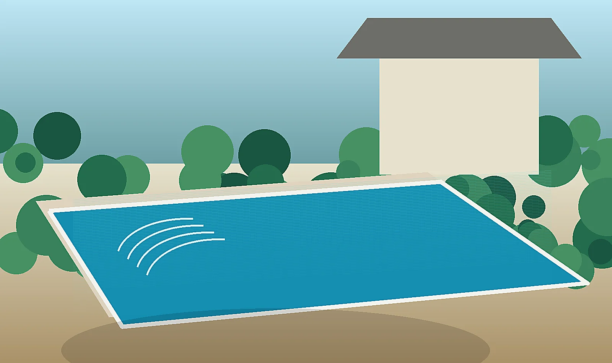

Piletas de hormigón
Construcción de piletas de hormigón armado a medida, pensadas para máxima durabilidad, diseño personalizado y terminaciones premium.
Diseñamos y construimos piletas de hormigón con calidad de obra, terminaciones premium y atención personalizada. Convertí tu jardín en un espacio funcional, moderno y listo para disfrutar.
Presupuesto por etapas, alcance claro, adicionales definidos y seguimiento de obra.
Validamos condiciones municipales, retiros, accesos y documentación antes de iniciar.
Revisamos terreno, medidas, orientación, acceso de maquinaria, nivel y posibles napas.
Asesoramiento sobre mantenimiento, equipos, filtrado, iluminación y cuidado del agua.
Desde la idea inicial hasta la puesta en marcha: estructura, hidráulica, revestimientos, equipos, iluminación y mantenimiento.

Construcción de piletas de hormigón armado a medida, pensadas para máxima durabilidad, diseño personalizado y terminaciones premium.

Venecitas, cerámicos, bordes atérmicos, playa húmeda y terminaciones para renovar o finalizar tu piscina.

Sistemas de iluminación LED para disfrutar la pileta de noche con seguridad, estética y bajo consumo.

Bombas de calor y soluciones para extender la temporada de uso durante más meses del año.

Limpieza, control de agua, revisión de filtro, bomba y mantenimiento preventivo en Zona Sur.

Movimiento de suelo, estructura, cañerías, nivelación y obra integral para piscinas nuevas.
Un método claro para evitar errores, gastos innecesarios y problemas futuros.
Relevamos idea, zona, medidas y presupuesto aproximado.
Evaluamos terreno, acceso, niveles y ubicación.
Definimos medidas, profundidad, playa, escalones y equipos.
Excavación, estructura, cañerías, revestimientos e iluminación.
Puesta en marcha, pruebas y recomendaciones de uso.
Atendemos obras particulares, casas, quintas, barrios cerrados y proyectos familiares en GBA Sur.
Contenido útil para atraer búsquedas SEO y resolver dudas comerciales frecuentes.
Guía para entender qué factores influyen en el precio: medidas, excavación, hormigón, revestimiento, equipos, iluminación y terminaciones.
Leer más →
Comparativa clara entre pileta de hormigón y piscina de fibra para casas en Zona Sur Buenos Aires.
Leer más →
Cómo elegir largo, ancho, profundidad, escalones y playa húmeda según el jardín y el uso familiar.
Leer más →Errores de ubicación, filtrado, profundidad, acceso de obra y terminaciones que conviene evitar.
Leer más →Ventajas y diferencias de cada alternativa de terminación para una piscina durable y estética.
Leer más →Cómo mejorar seguridad, estética y uso nocturno con luces LED para piscina.
Leer más →Usamos imágenes reales de obras, terminaciones, mantenimiento e iluminación para mostrar mejor el tipo de proyectos que podés realizar.

Pileta moderna con solárium, agua cristalina y terminaciones premium.
Etapa de obra con armado de estructura para pileta de hormigón.

Detalles reales de revestimiento, borde atérmico y calidad final.
Ambientes nocturnos con iluminación LED integrada a la piscina.
Limpieza, filtrado, bomba y mantenimiento para que la pileta rinda mejor.
Una pileta bien construida no empieza con la excavación: empieza con una visita técnica, revisión del terreno, análisis de permisos y un presupuesto claro para evitar sorpresas.
Enviá tu zona, medidas aproximadas y una foto del espacio. Te orientamos con opciones realistas para tu terreno.
Depende de medidas, profundidad, terreno, estructura, revestimientos, equipos, iluminación, climatización y terminaciones. Por eso recomendamos una visita técnica y presupuesto con alcance claro.
En muchos casos debe evaluarse como obra particular u obra privada. Hay que revisar municipio, zonificación, retiros, documentación, derechos de construcción y condiciones del barrio si corresponde.
Medidas disponibles, ubicación, orientación solar, acceso de maquinaria, medianeras, niveles, tipo de suelo, interferencias, posible napa y espacio para bomba y filtro.
Puede incluir diseño, excavación, estructura de hormigón, cañerías, filtrado, revestimientos, bordes, iluminación, climatización y puesta en marcha, según el alcance contratado.
El hormigón permite mayor personalización, mejor adaptación al terreno y terminaciones premium. La fibra puede ser más rápida, pero limita medidas, formas y detalles.
Sí. Podemos coordinar requisitos de ingreso, horarios, reglamento de obra y documentación adicional del barrio.
Sí. Se pueden diseñar con playa húmeda, escalones amplios, bancos, solárium y bordes atérmicos.
Sí. La iluminación LED mejora seguridad, estética y uso nocturno de la piscina.
Sí. Se puede prever climatización con equipos dimensionados según volumen de agua, uso esperado y condiciones del espacio.
Sí. Podemos asesorar o brindar mantenimiento, limpieza, control de agua, revisión de bomba, filtro y carga filtrante.
El plazo depende de tamaño, clima, acceso, permisos, terminaciones y complejidad técnica. Conviene definirlo por etapas y no prometer excavación sin validación previa.
Localidad, medidas aproximadas, fotos del terreno, idea de diseño, profundidad deseada, si habrá iluminación, climatización, playa húmeda o revestimientos especiales.
El precio de una pileta depende de medidas, profundidad, terreno, estructura, revestimientos, equipos, climatización, iluminación y terminaciones. Por eso conviene cotizar con alcance claro y vigencia definida.
Consultar presupuesto por WhatsApp